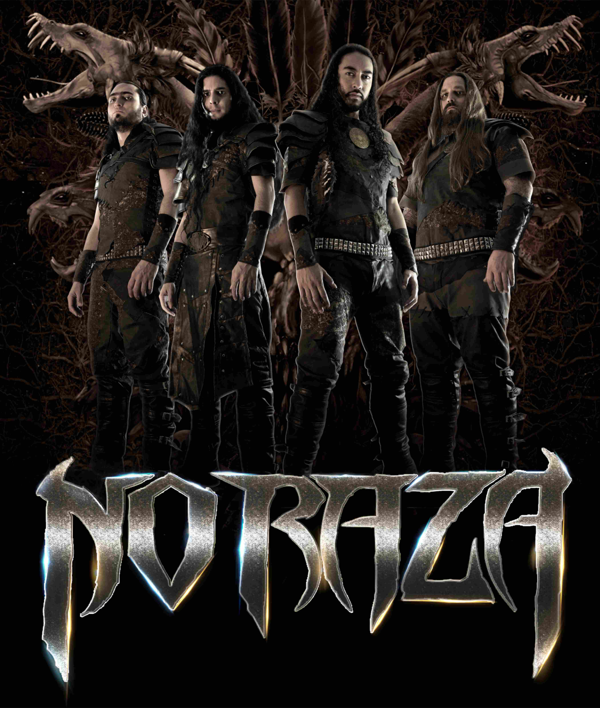

NO RAZA is a death metal band, formed in 1997 in the town of Bello - Antioquia (Colombia - South America).
Its ideology is based on social and political issues that make us reflect, with great technique and characteristic rhythms evinces the pain of a sick world that demands justice and peace, to those who bring us under a power snatched from our hands.
Its amazing staging recreates the desolation of a world at war and the disposition to struggle of those who guard the truth to defend our ancestral cultures.
NO RAZA has shared stage with world known artists and has participated in major festivals.
With two internationals tours called Misatropia Mexico Tour 2013 and When Chaos Reigns North American Tour 2014.
Through the years it has become an icon for the South American Death Metal and one of the bands with the most international projection.
